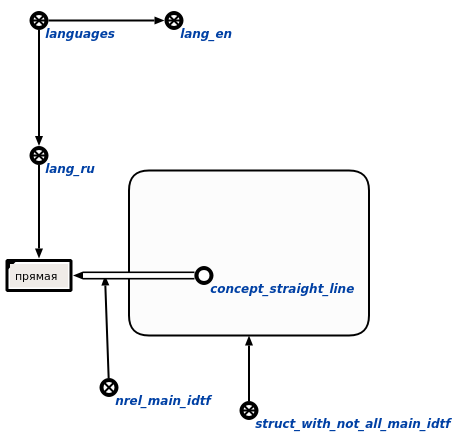

Команда пользовательского интерфейса для проверки наличия основных идентификаторов sc-элементов для всех внешних языках с заданным контекстом предназначена для проверки sc-элементов, на предмет наличия у них основных идентификаторов на всех внешних языках. Первым аргументом команды является знак структуры, элементы которой будут проверяться. Вторым аргументом является контекст действия, в рамках которого будет осуществляться поиск. Результатом выполнения команды является занесение всех узлов, у которых нет основных идентификаторов на всех внешних языках, в структуру, у элементов которой указаны основные идентификаторы для некоторых, но не всех внешних языков:
